The most commonly used whole-cell assay involves the measurement of fluorescence.
Section divider: Fluorescent Reporter Assays. Four green flow-cytometry histograms of fluorescence, in a two-by-two grid.
Making a Cell Fluorescent
Fluorescent proteinmade by the cell, from a gene you put inSensora fluorescent protein that brightens with a condition, such as calciumDyea small molecule that gets in; the cell’s enzymes can uncage itSurface labela fluorescent antibody bound to a protein on the surfaceFluorescent particlea bead or nanocapsule tethered to the surface
Though there are additional ways of making a cell fluorescent such as using caged fluorophores and enzymes that deprotect them, the most common way of making a cell fluoresce is to express a gene encoding a fluorescent protein. There are a small number of ancestral fluorescent protein genes that have been isolated from jellyfish and other marine organisms. However, they have been extensively mutated to create additional genes with altered properties. There are many variants of GFP and RFP today with different spectral properties. For example, YFP is a mutant of GFP that emits yellow light instead of green. Also, there are mutants that fluoresce only in the presence of calcium ions. This is only the tip of the iceberg of fluorescent proteins that exist now, but the main point is that these can be expressed in many types of cells and can fluoresce at wavelengths that the cells do not normally generate. Thus, these signals can be readily quantified on intact cells using various fluorescence measurements.
A rod-shaped bacterium drawn in outline, full of small barrel-shaped green fluorescent proteins, with a faint green wash in its cytoplasm: a fluorescent protein, made by the cell from a gene you put in.
Cytometry
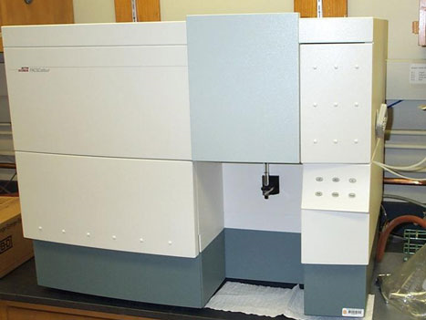
Primarily used for mammalian cells, but can be used for bacteria/yeast
FACS (fluorescence activated cell sorting) is something different—it recovers the cell population you want
One workhorse instrument for measuring fluorescence is cytometry. Here, a dilute sample of cells is passed through a flow chamber. A laser is directed at a specific region of space along this chamber. Since the cells are dilute, only one cell passes through the laser at any given time. If that cell is fluorescent due to the expression of a fluorescent protein or surface labeling with a fluorophore, the cell will emit light as it passes through the laser. The wavelength of that emitted light will be red-shifted relative to the laser’s wavelength, so it is easily detected. Additionally, the cell will scatter the laser light in directions other than its original vector. These signals are quantified by placing detectors at alternate angles to the incident beam. Thus, each cell gives a side-scatter signal, a forward-scatter signal, and one or more fluorescence signals depending on the instrument setup.
A diagram of a flow cytometer beside a photograph of a real benchtop instrument, with two notes: cytometers are primarily used for mammalian cells but can be used for bacteria and yeast; and FACS is something different, it recovers the cell population you want.
Cytometry Data
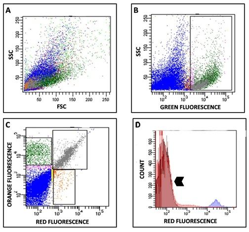
It is very rare to look at the raw data from a cytometry run. There are typically 10,000 events are more in the dataset requiring the use of visualizations to be meaningful. Here is a typical series of visualizations. Panels A, B, and C are each dot plots, while D is a histogram.
Four panels of cytometry data. A, B and C are dot plots — side scatter against forward scatter, side scatter against green fluorescence, and orange against red fluorescence, with gates drawn on B and C. D is a histogram of counts against red fluorescence.
Cytometry Data
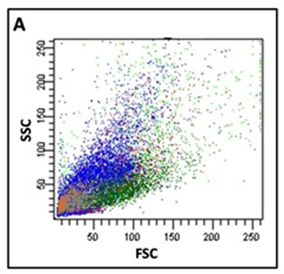
Dot Plot—each dot represents one event (presumably a cell)
Plot any combination of 2 measurements
Can “gate” based on choosing a region of a scatter plot
Each dot in the chart represents one cell that passed through the laser. In each plot, the axis are two different signals. In A, it is side scatter versus forward scatter. These scatter measurements are related to the size and shape of the cell. With mammalian cells, these signals are more clustered. For bacteria, as shown here, there is a cone of responses primarily as a result of their smaller size, but also their rod shape – there is more surface area to scatter off of if the bacterium passes through the laser side-on rather than end-on. I
Panel A on its own, a dot plot of side scatter against forward scatter. Bullets: in a dot plot each dot represents one event, presumably a cell; any combination of two measurements can be plotted; and you can gate by choosing a region of the scatter plot.
Cytometry Data
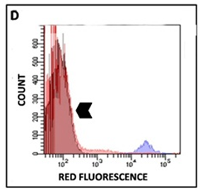
Histogram—number of counts at each level of fluorescence
Can plot for any 1 measurement
RFP intensity is X axis, Y axis is how prevalent that is in the sample
Is usually plotted on a semi-log scale
Can also calculate averages/stdevs from data
In panel D, we have a different type of plot called a histogram. Here we plot the number of events that were observed for a narrow range of measured values. Here they are computing the distribution of red fluorescence measurements within the population. So, a dot plot compares two different measurements, while a histogram shows the distribution of only one measurement.
Typically fluorescence measurements are presented on log scale due to the wide range of signals, and the low precision of the measurements. Though the value observed during any single event has low precision, many events can be averaged together to get more confident values.
Panel D on its own, a histogram of counts against red fluorescence. Bullets: a histogram is the number of counts at each level of fluorescence; it can be plotted for any one measurement; RFP intensity is the X axis and the Y axis is how prevalent that is in the sample; it is usually plotted on a semi-log scale; and averages and standard deviations can be calculated from the data.
Fluorescence Microscopy
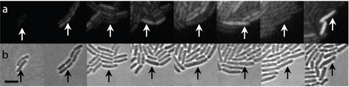
Loosely immobilize bacteria on an “agar pad” on a slide
Excite with a laser and take images/videos of fluorescence
Lower throughput, lower precision than cytometry
Allows timelapse measurements on a single population of bacterium, whereas cytometry only works for a single timepoint per cell
Can do multiple colors
Can do sub-cellular localization
Can see morphological changes
Can correlate morphological variation with fluorescence variation
Can track the heredity of fluorescence activity
Like Cytometry, requires normalization of signal, but not normalization of optical density
Another common way of measuring fluorescence is to use microscopy. In this experiment, the engineers loosely immobilize bacteria on an “agar pad” on a slide. They then excite with a laser and take images or videos of fluorescence. Microscopy has lower throughput and lower precision than cytometry. However, it allows timelapse measurements on the same population of bacteria, whereas cytometry only works for a single timepoint per cell
A timelapse strip of a bacterial microcolony growing, fluorescence above and phase contrast below, with arrows tracking one lineage. Bullets: loosely immobilize bacteria on an agar pad on a slide; excite with a laser and take images or videos of fluorescence; lower throughput and lower precision than cytometry; allows timelapse measurements on a single population, whereas cytometry gives a single timepoint per cell.
Normalization of Signal
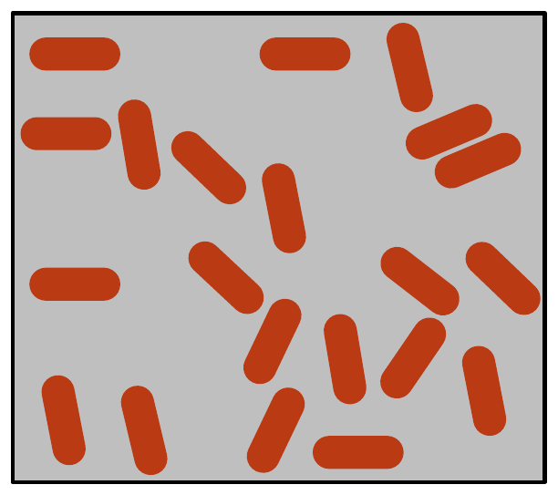
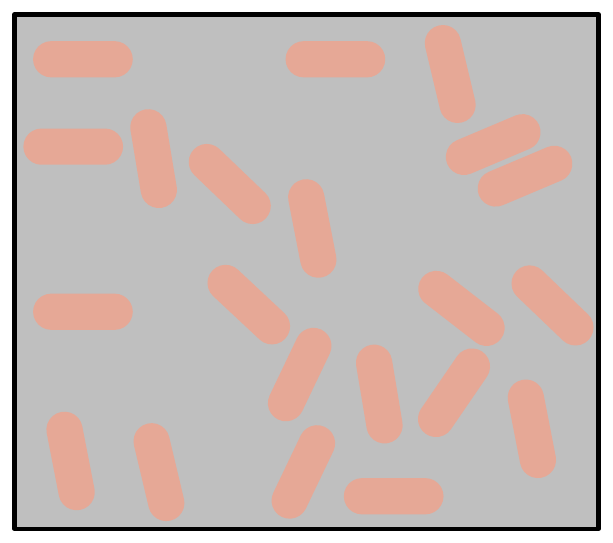
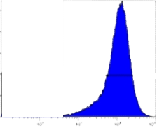
Suppose I use my God’s eye view of what’s going on in two samples of bacteria encoding RFP. On the left, the cells are much more fluorescent than those on the right. On two different days, I run one of the samples on the cytometer and collect a histogram.
Two grey fields of rod-shaped bacteria side by side: on the left the cells are strong vermillion, brightly fluorescent; on the right the same cells are a pale tint, dimly fluorescent.
Normalization of Signal
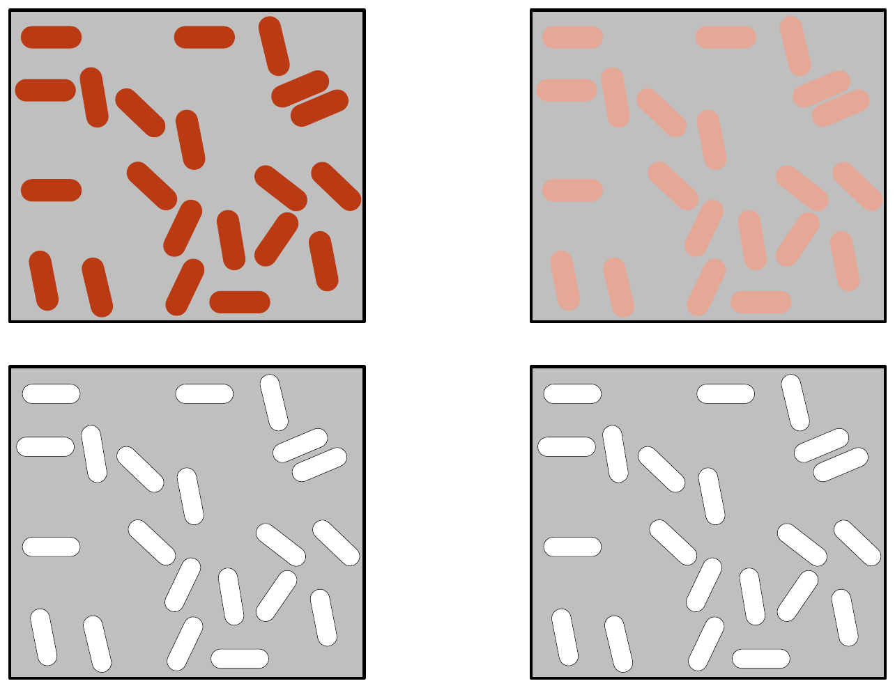
For cytometry, this normalization is typically done by comparison to cells that lack the fluorophore, such as unmodified bacteria grown under similar conditions to the test sample. You run the white cells through the cytometer then adjust the gain on the instrument such that the signal is centered in the first decade. You then measure your test samples with these settings.
The bright and dim cell fields again, each now paired with a field of white control cells beneath it — cells lacking the fluorophore, run alongside each sample.
Spectroscopy
(Ensemble measurement of absorbance or scattering)
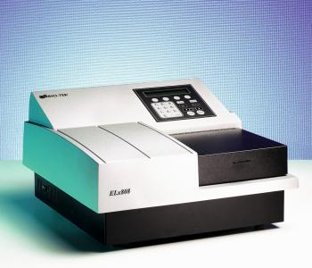
Scattering is measured the same way as absorbance (the signals are always superimposed)
Typically done for bacteria at 600nm, the product of which is an OD_600 measurement, referred to as the “optical density”
Though this does not involve fluorescence, another means of using light to make measurements on a cell is to use spectroscopy. Here, you hit a sample with a beam of light and quantify how much comes out the other end. That is its ‘transmittance’ which is inversely related to ‘absorbance’. This measurement requires the use of a chromophore, which means a molecule that absorbs light. A very common fluorophore for such experiments is o-nitrophenol which turns yellow. Cells don’t absorb much yellow light, thus there is little competing signal at this wavelength. Typically o-nitrophenol will be caged with another molecule like phosphate or galactose that prevents the molecule from absorbing light. An enzyme like alkaline phosphatase or galactosidase can release the alcohol and color results. Thus, the activity of the enzyme in the cell can be monitored by watching the formation of yellow color.
Scattering is a related phenomenon in which light bounces off a particle at a different angle than its incident vector. Experimentally, scattering is measured the same way as absorbance though it is a distinct phenomenon. In spectrometric measurements of cells, the scattering signal will be superimposed over the absorbance signal, and the two signals are additive. The scattering signal can be isolated by monitoring the cells at 600nm, and this is referred to as the sample’s ‘optical density’. It is linearly related to the concentration of cells in the sample.
A diagram of a spectrophotometer beside a photograph of a plate reader, with two notes: scattering is measured the same way as absorbance, and the signals are always superimposed; for bacteria it is typically done at 600 nanometres, giving OD600, the optical density.
Fluorimetry
(Ensemble measurement of fluorescence)
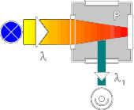
Hit it with a band of light with one color at the “Excitation Wavelength,” monitor the “Emission Wavelength”
Requires a small molecule fluorophore or fluorescent protein
There is always an autofluorescence background that can mask low signals
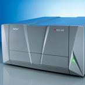
Requires normalization of the signal for optical density
Fluorimetry is highly related to spectroscopy, and a fluorimeter can also perform absorbance measurements. In spectroscopy, we hit with one wavelength and monitor the amount of light coming through the sample. In fluorimetry, we hit with one wavelength and monitor the light emitted at 90 degree angle to the incident beam and at a higher wavelength. Thus, there is an excitation wavelength at which we probe the sample, and an emission wavelength at which we observe the response. Such experiments require the presence of a small molecule fluorophore or a fluorescent protein. Like chromophores, these molecules absorb light. However, instead of simply irradiating heat, these molecules release the energy as photons of higher wavelength. Cells contain some mildly-fluorescent fluorophores such as tryptophan which produce a background signal in these measurements. This autofluorescence can mask low signals. Like cytometry and microscopy, you must normalize the signal against some standard such as white cells in fluorimetry and spectrometry. Additionally, you must normalize for cell density.
Fluorimetry, the ensemble measurement of fluorescence. A schematic of a fluorimeter with excitation light entering the sample and emission collected at ninety degrees, beside a photograph of a plate reader. Bullets: hit the sample with one color at the excitation wavelength and monitor the emission wavelength; it requires a small-molecule fluorophore or fluorescent protein; there is always an autofluorescence background that can mask low signals; and it requires normalization of the signal for optical density.
Normalization for OD
(Optical Density, for ensemble measurements)
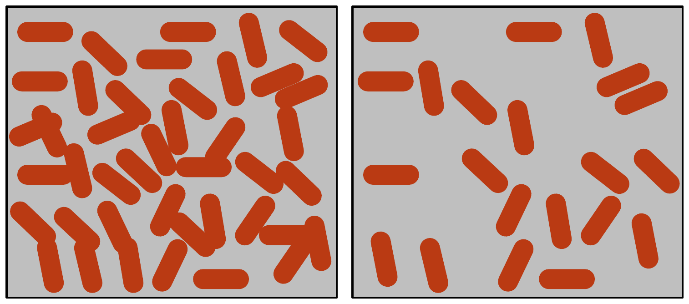
Fluorescence
0.86
0.42
OD_600
0.44
0.22
Ratio
2.0
1.9
Consider I have these two samples containing the same bacteria. The only difference is that the cells on the left are twice as concentrated as those on the right. Fluorescence measurements are linearly related to concentration, thus the sample on the left will give twice the signal as those on the right. If you take those numbers at face value, you would incorrectly conclude that the cells on the left are more fluorescent than those on the right.
Two fields of the same fluorescent bacteria, the left twice as concentrated as the right. Beneath them, fluorescence reads 0.86 on the left and 0.42 on the right.